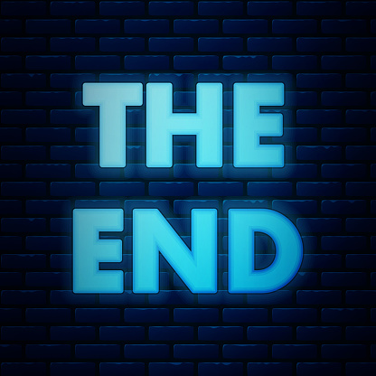

The Inevitable Ending
Every great story must have a great ending. Something you may want to consider is picking an emotion you want your audience to feel when they see the ending / an overall adjective, whether it's a happy, sad, bitter-sweet, confusing, ambiguous, or complex ending. Another thing you may want to consider is ending your story on a cliffhanger if you intend to make a continuation or if you think it best fits your story's vibe (though beware if not done well it could make a viewer of your story frustrated and that ending on a cliffhanger is more common for specific chapter/episode/season/etc. of that story rather than the whole). But no matter what, your story's ending should feel like it wraps something up, even if it is a cliffhanger (in which case it should introduce something new).
And that's it! Thank you for visiting my website. If you have any questions, you can email them to me at ythakkar@eatsideprep.org
